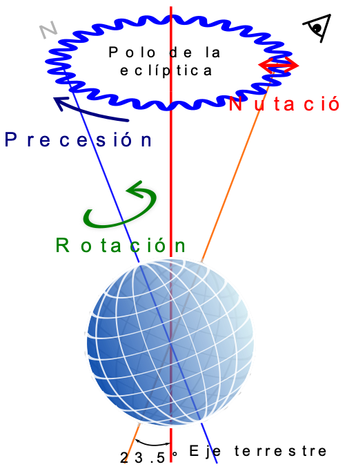

1. El Sistema Solar
Nuestro Sistema Solar es un lugar muy muy especial; tan especial que es, hasta donde sabemos, el único del cosmos donde ha sido capaz de desarrollarse la vida.
La frialdad de los datos nos dice que el Sistema Solar está situado en uno de los tres brazos en espiral de esta galaxia, llamado Orión, a unos 25.800 años luz del núcleo, alrededor del cual gira a la velocidad de 250 km por segundo, empleando 225 millones de años en dar una vuelta completa. Pero esos números son algo fríos.
¿Qué tal si descubres algunos de los secretos del Sistema Solar con un documental? Échale un ojo al que aparece bajo estas líneas.
En cualquier caso aprendamos algo más de los movimientos que ocurren en su interior.
Movimiento del sistema solar en la Galaxia
Aunque ya lo hemos apuntado anteriormente, el Sistema Solar se mueve (y mucho). Sin embargo, a menudo solemos imaginar el Sistema Solar como un sistema formando por una estrella alrededor de la cual giran, tranquilamente pero a velocidades de vértigo, los planetas. Sin embargo, este apacible escenario no lo es tanto y más si tenemos en cuenta que el Sol es solo una de las 300.000 millones de estrellas que giran alrededor del centro de la Vía Láctea en una órbita casi circular y viaja a unos 828.000 km/h.
El resultado de tanto movimiento es que si consiguiéramos ver el Sol pasar a nuestro lado mientras estamos tranquilamente sentados en el sofá mientras vemos nuestra serie favorita, lo que veríamos sería una enorme bola de fuego- el Sol- y los planetas girando a su alrededor en el plano que contiene sus órbitas (se conoce como eclíptica) pero el rastro que dejarían a su paso sería muy similar al que deja la hélice de un gran barco.
Pero...entonces, si el los planetas se mueven alrededor del Sol en el plano de la eclíptica y el Sol se mueve alrededor del centro de la Vía Láctea, ¿cómo se mueve el Sol? La respuesta no es sencilla pero se sabe que nuestra estrella necesita unos 225 millones de años para una vuelta completa alrededor de la Vía Láctea, es decir, su cumpleaños galácticos es nuestro 225 millones de cumpleaños, o lo que es lo mismo, a día de hoy (semana arriba, semana abajo) nuestro Sol es un adolescente galáctico de solo 20 años y ha recorrido ya un total de 150000 años luz. Dado que el Sol es una enana amarilla y la vida media de este tipo de estrella es de 10000 millones de años podemos predecir que nuestro Sol morirá joven, con alrededor de 40 años galácticos.
A día de hoy, nuestro Sol se dirige hacia la estrella de Lambda Hércules a unos impresionantes 7km/s de velocidad y con una eclíptica inclinada unos 60º en relación al plano galáctico, es decir, va un poco hacia arriba. De hecho su viaje le ha hecho que actualmente sobresalga por encima del plano galáctico unos 50 años luz. Ojo, que tenemos un Sistema Solar intergaláctico.
Aunque...no hay de qué preocuparse porque el tirón gravitatorio que ejerce la Vía Láctea, tanto el agujero negro supermasivo que hay en su centro como toda la materia que la forma, está frenando el intento de fuga intergaláctica de nuestro Sol y tal como predijo el astrónomo Frank Bash, en unos 14 millones de años, el Sol alcanzará su máxima altura respecto del plano de la Vía Láctea, unos 250 años luz, y comenzará a caer hacia sus antípodas. Y en hacer ese movimiento solo tardará...unos 70 millones de años (atraviesa el plano galáctico cada 35 millones de años).
Las órbitas de los planetas
Todos conocemos que las órbitas de los planetas alrededor del Sol son elípticas y verifican las leyes de Kepler (de la tercera hemos hablado antes).
El alumnado de 3ºESO del IES Gregorio Salvador, desde la materia de matemáticas y utilizando Geogebra, han programado una interesante animación en la que se ven las órbitas de los planetas del Sistema Solar alrededor del Sol. Podéis verla con más detenimiento bajo estas líneas
En esta simulación solo hemos tenido en cuenta los efectos gravitatorios del Sol respecto de los diferentes planetas del Sistema Solar pero no las perturbaciones que provoca en sus órbitas los efectos gravitatorios de unos planetas sobre otros. Si esto lo consideramos entonces las órbitas son un poco más complejas aunque permite explicar algunos efectos contraintuitivos que vemos en el cielo nocturno. Te dejo este breve vídeo donde esto se explica para el planeta Venus.
Un sistema muy movido
Todos sabemos que los planetas realizan diferentes movimientos respecto de su estrella y respecto de sí mismos. Quizás lo más conocidos sean los movimientos de traslación; que es el movimiento que realiza un planeta alrededor de la estrella respecto de la que orbita y que dan lugar a los años, y rotación que es el movimiento que realiza un planeta alrededor de su eje y que es el responsable de sus días y sus noches.
Sin embargo hay algunos movimiento más y más complejos que ayudan a entender , no tanto su presente, si no algunas cuestiones de su pasado. Por ejemplo, en el caso de la Tierra, algunos de estos movimientos ayudan a entender los cambios climatológicos que han sucedido en la Tierra desde su origen.
En el vídeo que aparece junto a estas líneas podremos entender en qué consiste los movimientos de un planeta poniendo como ejemplo la Tierra y sus movimientos: traslación, rotación, precesión, nutación y galáctico. Así que...atento al vídeo
Fue Johannes Kepler quien tras estudiar exhaustivamente el movimiento de los planetas en la cúpula celeste y analizar en profundidad trabajo de su profesor, Tycho Brahe, quien probó que, como ya había apuntado Copérnico y Galileo, el Sol tenía que encontrarse en el centro del Sistema Solar y su inmensa atracción gravitatoria (aunque para explicar esto en primera instancia necesitaríamos las aportaciones de Newton) era la responsable del movimiento de los planetas. Su trabajo revolucionó a la astronomía.
De sus observaciones, Kepler formuló empíricamente tres leyes de órbitas planetarias que describen cómo los planetas se mueven en sus órbitas alrededor del Sol. Como ya hemos indicado anteriormente, Kepler fue capaz de deducir empíricamente estas leyes, pero no comprendió por qué los planetas se ven forzados a moverse de esta manera ya que no se había descubierto gravedad. Cuando Newton descubrió y enunció su teoría de la gravedad descubrió que las leyes de Kepler eran simplemente una consecuencia de la fuerza de la gravedad entre el Sol y los planetas.
Aunque fueron necesarias muchas observaciones y deducciones más para justificar por qué algunos planetas realizaban movimientos extraños, quizás el más curioso sea el de Urano que rota de una manera muy curiosa, hoy en día se conocen a la perfección las razones de sus movimientos.
Como ya se ha sugerido antes, para entender en qué consiste la rotación de un astro del Sistema Solar, el científico planetario James O’Donoghue realizó una simulación en la que muestra a la perfección cómo rotan todos estos cuerpos celestes del Sistema Solar, incluyendo los planetas considerados enanos, como Plutón o Ceres. Atento al vídeo que es muy muy interesante.
Pero además de estos movimientos, de estos pasos de baile como hemos titulado la página, hay otros más. Veámoslos con algo de detenimiento.

Además de los movimiento de traslación y rotación hay dos movimiento menos perceptibles pero igualmente importantes: Precesión y Nutación. Estos dos movimientos explican por qué la posición de los equinoccios no es fija o por qué la inclinación del eje de Tierra tampoco lo es.
El movimiento de precesión es muy fácil describirlo con ayuda de una peonza ya que se define como el movimiento asociado al cambio de dirección en el espacio que experimenta el eje instantáneo de rotación de un cuerpo. En el caso de una peonza, dado que el eje de rotación de la peonza no es normalmente vertical, este eje va cambiando a medida que la peonza va girando. Dado que la Tierra, como todos los cuerpos del Sistema Solar en mayor o menor medida, tiene su eje ligeramente inclinado respecto de la vertical del plano de su eclíptica, la posición de los equinoccios cambia de forma periódica y se invierte cada 25868 años.
El movimiento de los equinoccios en la eclíptica se llama precesión de los equinoccios. Para establecer la posición real de las estrellas en un momento determinado tiene que aplicarse una corrección de precesión a las cartas celestes.
En cuanto a la nutación debemos decir que se trata de un movimiento mucho más sútil y debido, en gran medida, a la atracción gravitatoria que ejerce la Luna sobre la Tierra. Debido a la Luna, y a la forma esferoidal de la Tierra (la Tierra no es una esfera perfecta, recordad que siempre se os ha señalado que era una esfera achatada por los polos), con un pequeño abultamiento ecuatorial, el eje de la Tierra sufre un pequeño vaivén debido al "exceso" de atracción gravitatoria que ejerce la Luna sobre el abultamiento ecuatorial respecto del que ejerce la Luna en los polos. A consecuencia de ello aparece el movimiento de nutación del eje de la Tierra.
Dado que precesión y nutación depende de la forma esferoidal de la Tierra y de la atracción gravitatoria de la Luna sobre la Tierra, ambos movimientos están acoplados de manera que en una vuelta completa de precesión (25.868 años) la Tierra realiza más de 1.300 bucles de nutación. El movimiento de nutación de la Tierra fue descubierto por el astrónomo británico James Bradley.